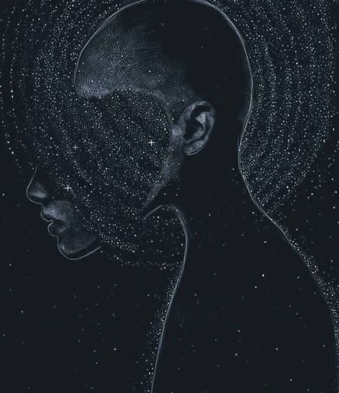

Tanto la meditación como el Yoga son prácticas ancestrales muy poderosas, a través de las cuales podemos armonizar nuestra energía y acceder a estados superiores de conciencia. ¿Alguna vez escuchaste sobre todas las habilidades que podemos desarrollar? Usamos una mínima parte de nuestro potencial porque desconocemos nuestras verdaderas capacidades. La mente nos genera la ilusión de que somos entes separados y desconectados entre sí. Si logramos trascender esta creencia, podemos expandir nuestra percepción y acceder a nuevas maneras de relacionarnos con la energía y la dimensión cuántica dentro de nuestra experiencia humana.
La meditación y el Yoga son un portal directo para despejar nuestra mente y conectar con nuestra fuente en donde se manifiestan las dimensiones superiores del ser. En sánscrito se le llama Siddhis a los “poderes” que puede alcanzar el ser humano consciente. Están relacionados al control del cuerpo y la mente, la clarividencia, y la psicoquinesis. En otras palabras, implica trascender las limitaciones físicas, mentales, y sensoriales, para acceder a nuestro verdadero potencial.
Muchas veces nos encontramos con estos fenómenos en la vida cotidiana, pero los atribuimos a casualidades o poderes externos. Descubrir estas capacidades innatas del ser humano nos da la posibilidad de controlarlas y de reflexionar y responsabilizarnos sobre nuestro impacto en el mundo material, a través de lo imperceptible. Con la intención de comprender mejor nuestras limitaciones ilusorias para trascenderlas.
¿Cómo se puede lograr esto? Los Siddhis se alcanzan practicando la concentración,la meditación y la unión con nuestra esencia original. La meditación y el Yoga son prácticas que trabajan sobre estas áreas, por lo que con un verdadero entrenamiento pueden obtenerse.
Algunos de los conocimientos que pueden alcanzar son: sobre pasado, presente y futuro; sobre otras mentes, sobre el universo exterior e interior. También la fuerza extraordinaria; la clariaudiencia; la liberación de hambre y sed, y la estabilidad en la salud.
Otros de los Siddhis son el conocimiento a la distancia; la percepción de lo invisible; la manipulación de la materia; la transmisión de la energía espiritual a lxs otrxs; el conocimiento del origen de las cosas, y de todo lo cognoscible; y la liberación de los apegos.
Estas son solo algunas de las habilidades que podemos desarrollar si logramos despertar y elevar nuestra conciencia. ¿Te lo hubieses imaginado? Muchos pueblos ancestrales vivían de manera integrada con la trama planetaria, y ello les permitió descubrir y alcanzar muchos de estos Siddhis. Estas posibilidades también están a nuestro alcance, y en Bindi te proponemos emprender juntxs el viaje dentro de este camino espiritual, ya sea a través de la meditación, el Yoga, o la manera que vos mismx encuentres para elevar tu conciencia.